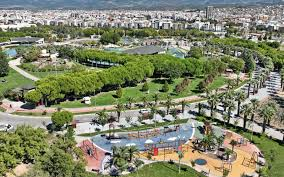

Oh hi there!
Welcome to my very first website. I'm not sure about if I can tell you something interesting but I hope you like it when you see it.. My name is Naz, I'm studying architecture and it's my second year.
Let me tell you about my favorite sitcom, Modern Family. The series revolves three different families who are interrelated through their patriarchy. Jay Pritchett, the father, and his two adult children Claire and Mitchell. I won't tell anything because I highly recommend this series so I don't want to give spoilers but basically it depicts a modern-day tight-knit extended family and many episodes are comically based on situations that many families encounter in real life.
Modern Family has a different space in my heart. It isn't because it's funny or it isn't because of the cast but it is because it males me feel comfortable. I feel the word of "family" and I feel like a member of them.

FYI my favorite episode is called "Connection Lost". The whole episode is going on face time and story line is a literal comedy machine. Let me know when you watch it or if you already did, we should absolutely talk about the whole series!!!
My hometown is Akhisar, it's one of the district of Manisa. It's very small that everyone is connected and I'm telling you the truth. Thinking about Akhisar, I don't know if I love or hate there. THe location is near to İzmir so whenever I want, I can hop on a bus and go. However, the activities in Akhisar are way too limited. We have approximately 15 cafes and it doesn't matter which one you go, you always see someone you know whether you like them or not. And that's the bad part of Akhisar. Anyways I think I like it there because how can you hate your hometown.. right?


Here are the three informations about me you may not know:
- I was a huge KPOP fan from 2019 to 2023. Back then I had fan pages about the groups I love.
- My favorite dish is pasta. Eat pasta with me and then we are best friends.
- I fainted after I got my belly buton pierced. A tragic but funny story.
I wrote about totally different two topics but this is me.. you will understand when we talk face to face. Thank you for spending your time on my website. I know I didn't tell so many things but if I start telling, I swear I can't stay quiet anymore. But I would really love to tell anything if you want to talk!!! I put my favorite song link under this paragraph, you can listen and tell me your thoughts about it. Have a great day or night, stay safe ♡
myfavoritesong